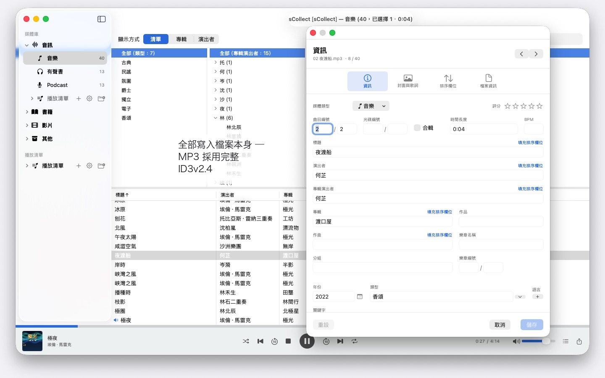
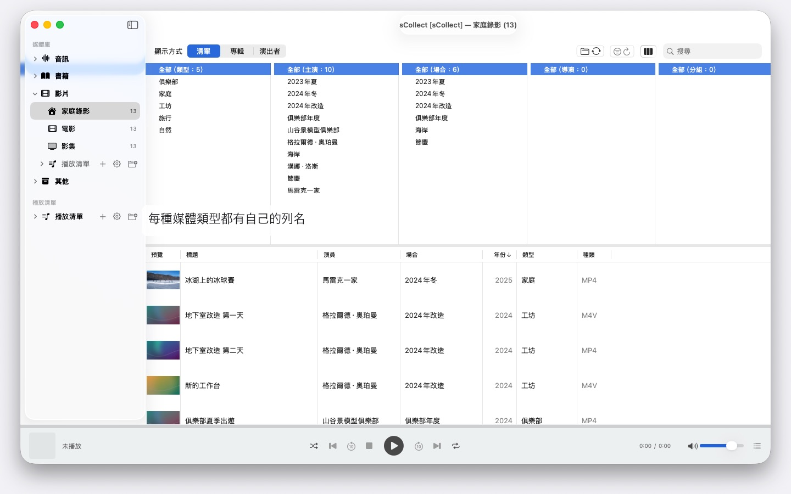

成千上萬位藝人、多部 Mac、macOS 14 及以上任一版本：sCollect 整理音樂、電影和書籍，並把你填寫的資訊寫進檔案本身。無須帳號，也無須雲端。


sCollect 是一個媒體庫，收納一切可以收藏的東西：音樂、影片、家庭錄影、有聲書、Podcast 和電子書 —— 也包括根本不是媒體檔案的東西，例如硬幣或郵票，拍下照片並加以描述。類別叫什麼名字，由你自己決定。
與一般編目軟體的差別在於：sCollect 會寫回檔案。你在編輯器裡輸入的內容，不只進入資料庫，還會寫進檔案本身的中繼資料。這樣一來，即使有一天你不再使用 sCollect，你的工作成果依然留得下來。
整理，但不必你自己動手
匯入時，sCollect 會把每個檔案放到它該在的位置 —— 依媒體類型、藝術家、專輯或日期，看你怎麼設定。每種媒體類型都可以擁有自己的資料夾，也可以放在另一顆硬碟上：影片放在大容量外接硬碟上，音樂留在快速的內建硬碟上。
如果你比較想讓收藏留在原處，那就改為連結它們。已連結的檔案永遠不會被動到。
為照片和影片拍攝而設
如果你拍照或錄影，可以讓某個媒體類型依日期存放：匯入時，檔案會進入依年和月劃分的資料夾，檔名帶上拍攝時間，直接從檔案本身讀取 —— 對於影片，如果相機沒有記錄時區，會給出提示。IMG_ 這類相機前綴可依需要從標題中移除，並補上 ISO 日期，清單和磁碟上的排序也保持一致。
真正寫進檔案的中繼資料
一個編輯器用於單一項目，另一個用於一次處理許多項目。兩者都寫入檔案本身所帶的格式 —— MP3 用 ID3v2.4，MP4 和 M4A 用它們的標籤結構，FLAC 和 OGG 用 Vorbis 註解，AIFF 和 WAV 用其文字區塊，DSD 錄音用 DSF，圖片用 EXIF、IPTC 和 XMP。
如果某種格式沒有對應的欄位，或者檔案受複製保護，sCollect 會在旁邊放一個附屬檔案，而不是把這項資訊弄丟。如果檔案與媒體庫不一致，編輯器會在你覆寫任何內容之前說明。
讓工作變短的幾件事
- 跨所有欄位的尋找/取代，修改前先預覽
- 在整個類別範圍內尋找重複項，並對哪一份比較好給出可追溯的判斷
- 像音樂管理軟體那樣的列瀏覽器，每一欄都可以多選。成千上萬位藝人也不必無止境地捲動：依首字母分組，A、AB、ABB——按三下即可到達
- 音訊和視訊播放，附播放清單和記住的播放位置
找出缺少的檔案，而不是四處翻找
執行一次檢查，就會標記每一個檔案已不在的項目，並記住結果。一個專門的檢視只顯示這些項目，並勾掉你已經重新連結好的。
多部電腦，一份收藏
一個媒體庫可以註冊副本。你在主媒體庫上所做的更改，會隨後傳到每一個可存取的副本，檔案和標籤都包括在內。如果某個副本目前離線，更改會先留著，等它回來時補上。
每部 Mac 執行哪個版本的 macOS 都無所謂：裝有 macOS 14 的 Mac 和裝有 macOS 26 的 Mac 讀取的是同一份收藏，系統更新也不會轉換它。不過，副本並不是備份。
匯入與匯出
既有的收藏可以透過 iTunes-XML 匯入，連同評分和播放清單。匯出則用 sCollect-XML —— 無損，適合搬遷和備份 —— 或者匯出為 Apple Music 的播放清單，或 iTunes-XML。
在你的 Mac 上，也僅在那裡
沒有帳號，沒有雲端，沒有分析，沒有廣告。sCollect 只使用你交給它的資料夾。
因此，sCollect 也不匯入 CD，不從網際網路取得曲目資訊 —— 這兩件事 Apple Music 都能做。在 Apple Music 中將 CD 匯入為 AAC、Apple Lossless 或 MP3，檔案就會帶著曲目資訊進入 sCollect。這樣，你收藏什麼、如何整理，沒有任何服務會知道。
提供 25 種可自由選擇的語言，每一種都配有完整的說明文件。
支援的語言：繁體中文、繁體中文（台灣）、簡體中文、英文、德文、法文、西班牙文、義大利文、葡萄牙文（巴西）、荷蘭文、瑞典文、挪威文、芬蘭文、波蘭文、捷克文、克羅埃西亞文、匈牙利文、羅馬尼亞文、土耳其文、俄文、烏克蘭文、波斯文、泰文、日文、韓文。
- 需要 macOS 14 或以上版本
- 支援 25 種語言
- 技術支援： SwiftAppsBavaria@gmx.net
更多 App
SwiftRename
批次重新命名檔案——依照拍攝日期、連續編號，或直接歸入年份與月份檔案夾。
sVectorLift
開啟、檢視舊的向量美工圖案並儲存為 SVG——CorelDRAW、Windows Metafile 與 CGM。
sName2Date
把檔案名稱中的日期當作拍攝日期寫入照片、影片與錄音——讓 IMG_20240115_103000.jpg 這樣的檔案在任何照片管理工具中都能正確排序。影像與影片資料保持不變；PDF 與其他沒有拍攝日期的檔案會設定檔案日期，也可依照需求把名稱改為 ISO 格式。一次處理整個檔案夾樹，每一次處理都可以用 ⌘Z 還原。
sName2Date Lite
每次處理一個檔案的版本：把檔案名稱中的日期當作拍攝日期寫入照片、影片或錄音，手動設定日期，把名稱改為 ISO 格式，並可用 ⌘Z 還原所有處理——功能與 sName2Date 相同，只是不能處理整個檔案夾。
sCollectPlay
媒體庫的播放器：播放直接來自檔案夾、來自 iTunes XML 或 sCollect 媒體庫的音樂、影片、有聲書與 Podcast——檔案的標籤不會有任何改動。支援播放列表、音軌與字幕軌道，播放影片時可慢動作播放與逐格步進。macOS 本身無法播放的格式，例如 MKV、AVI 或 DSD，會交給外部播放器。
sCollectPlay Lite
sCollectPlay 的精簡版：直接開啟檔案夾、iTunes XML 或 sCollect 媒體庫，播放其中的音樂、影片、有聲書與 Podcast——支援播放列表、音軌與字幕軌道、慢動作播放與逐格步進。每次工作階段只能使用一個來源；分欄瀏覽器、自訂播放列表與最近使用的來源僅限完整版。
sBikeBridge
分析單車騎乘紀錄，無需上傳至任何平台：讀取任何以此格式記錄的碼錶所產生的 FIT 檔案，以及 GPX 與 TCX。騎乘紀錄儲存在 Mac 上的獨立資料庫中——包含地圖、功率與心率、照片與備註；匯入時會辨識重複項目。依照年份或月份的統計數據，以及依照距離、爬升高度與時間長度的篩選，讓騎乘紀錄便於比較。地圖也可依照需求離線使用。